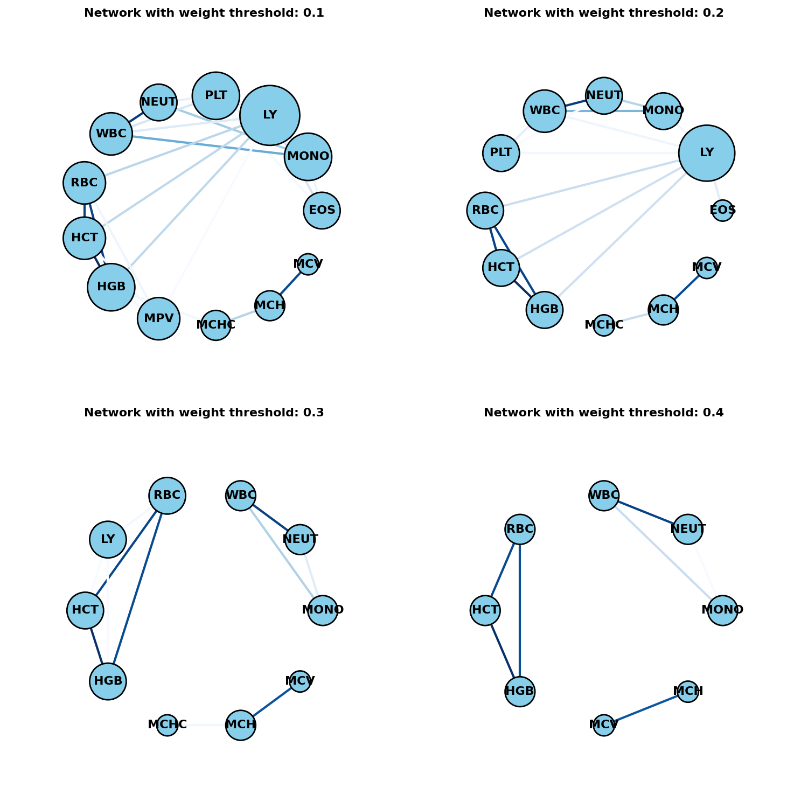
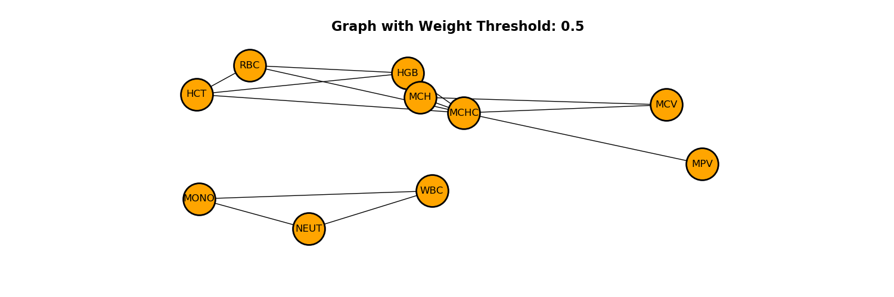
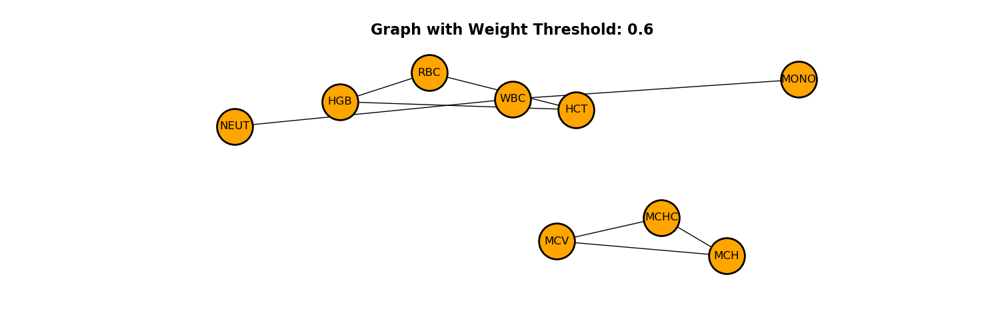
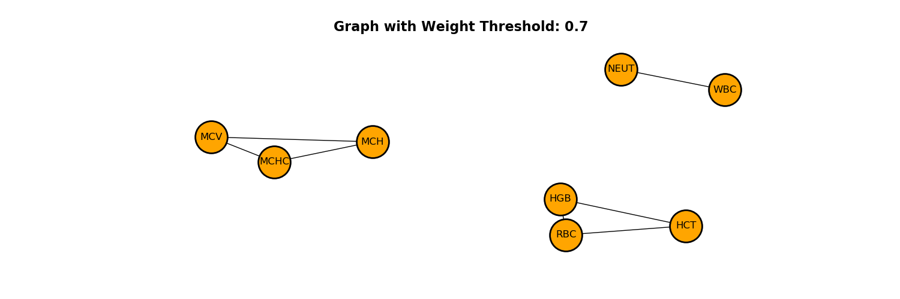
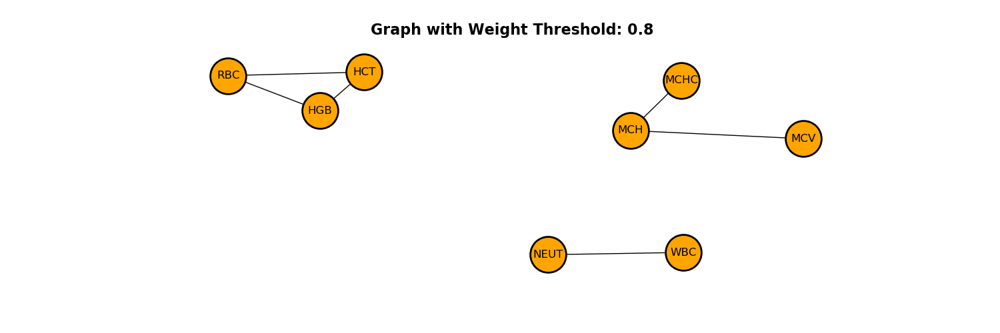
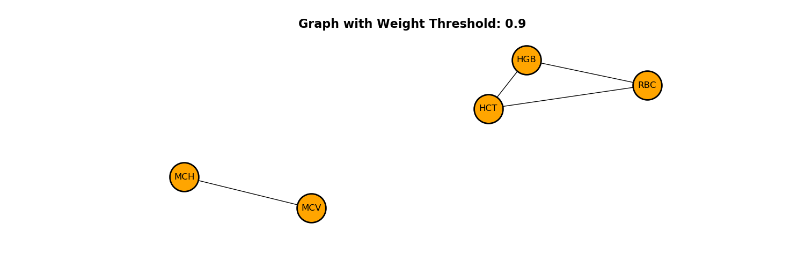

Note
Click here to download the full example code
Network graphs to visualise correlations¶
Using networkx library to visualise biomarker correlations
Import the relevant libraries first
10 11 12 13 14 15 16 17 | import numpy as np
import pandas as pd
import networkx as nx
import matplotlib.pyplot as plt
import seaborn as sns
import warnings
warnings.filterwarnings("ignore")
from pkgname.utils.widgets import TidyWidget
|
Data import¶
24 25 26 27 28 29 30 31 32 33 34 | # Set relative data path and set FBC panel list
path_data = 'datasets/Transformed_First_FBC_dataset.csv'
FBC_CODES = ["EOS", "MONO", "BASO", "NEUT", "RBC", "WBC",
"MCHC", "MCV", "LY", "HCT", "RDW", "HGB",
"MCH", "PLT", "MPV", "NRBCA"]
# Read data and drop Nan _uid records
df = pd.read_csv(path_data).dropna(subset=['pid'])
df.reset_index(drop=True, inplace=True)
|
Split data into input and output¶
41 42 43 44 45 46 47 48 49 50 51 52 53 54 55 56 57 58 59 60 61 62 63 64 65 66 67 68 69 70 71 72 73 74 75 76 77 78 79 80 81 82 83 84 85 86 87 88 89 90 91 92 93 94 95 96 97 98 | # Obtain the biomarkers DataFrame only
biomarkers_df = df[FBC_CODES].dropna(subset=FBC_CODES)
biomarkers_original_df_copy = biomarkers_df.copy(deep=True)
biomarkers_data = biomarkers_df.values
# Calculate correlation matrix using Pearson Correlation Coefficient
corr_mat = biomarkers_df.dropna().corr(method='pearson')
# Create a mask
corr_mask = np.triu(np.ones_like(corr_mat, dtype=bool))
# Plot seaborn heatmap, histogram and PDF of correlation values.
plt.figure(figsize=(20,8))
plt.subplot(1,2,1)
plt.title('Correlation Matrix for FBC panel', fontweight='bold', fontsize=15)
min_v = corr_mat.values.min()
ax = sns.heatmap(
corr_mat,
mask=corr_mask,
vmin=min_v, vmax=1, center=0,
cmap=sns.diverging_palette(20, 220, n=200),
square=True,
annot = True,
annot_kws={"fontsize":8}
)
ax.set_xticklabels(
ax.get_xticklabels(),
rotation=45,
horizontalalignment='right',
fontsize=15
);
ax.set_yticklabels(
ax.get_yticklabels(),
fontsize=15
);
ax.set_yticklabels(biomarkers_df.columns)
ax.set_xticklabels(biomarkers_df.columns)
plt.subplot(1,2,2)
plt.title('Histogram and PDF of FBC panel correlations', fontweight='bold', fontsize=15)
sns.distplot(corr_mat.values.reshape(-1), bins=50, kde_kws={'color': 'red','linewidth': 2, }, hist_kws={'edgecolor':'black'})
plt.ylabel("Density", fontsize=18)
plt.xlabel("Correlation values", fontsize=15)
plt.xticks(fontsize=15)
plt.yticks(fontsize=15)
plt.grid()
plt.show()
# Print the mean correlation value for each biomarker
print("\nSorted mean correlation values by biomarkers:")
print(corr_mat.mean(1).sort_values(ascending=False))
|
Out:
Sorted mean correlation values by biomarkers:
MCHC 0.382143
MCV 0.339476
MCH 0.333753
HCT 0.310918
HGB 0.309988
RBC 0.288058
WBC 0.284260
MPV 0.264927
MONO 0.247103
NEUT 0.224849
RDW 0.203782
PLT 0.175840
BASO 0.174083
LY 0.162450
EOS 0.141370
NRBCA 0.086162
dtype: float64
Plotting graphs using networkx¶
105 106 107 108 109 110 111 112 113 114 115 116 117 118 119 120 121 122 123 124 125 126 127 128 129 130 131 132 133 134 135 | thresholds = [x/10 for x in range(4,10)]
# for each threshold value
for threshold in thresholds:
# Transform correlation matrix in a links data frame (3 columns only):
links = corr_mat.stack().reset_index()
links.columns = ['var1', 'var2', 'value']
# Keep only correlation over a threshold and remove self correlation (cor(A,A)=1)
idx1 = links['value'] > threshold # above threshold
idx2 = links['var1'] != links['var2'] # self correlation
links_filtered=links[idx1 & idx2]
# Build graph
G=nx.from_pandas_edgelist(links_filtered, 'var1', 'var2', 'value')
# Adjust position for spring layout
pos = nx.spring_layout(G, k=0.45, iterations=20)
# Set plot parameters and draw networks
plt.figure(figsize=(15,5))
plt.title(f'Graph with Weight Threshold: {threshold}', fontweight='bold', fontsize=16)
nx.draw(G, with_labels=True,pos=pos, node_color='orange', node_size=1500, linewidths=2, font_size=12, edge_color='black', edgecolors='black')
plt.axis('off')
axis = plt.gca()
axis.set_xlim([1.2*x for x in axis.get_xlim()])
axis.set_ylim([1.2*y for y in axis.get_ylim()])
# Show
plt.show()
|
- 
- 
- 
- 
- 
- 
Total running time of the script: ( 0 minutes 2.771 seconds)